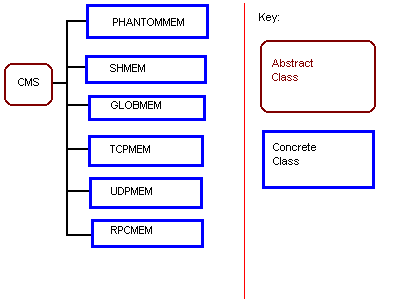

This document describes the internals of CMS and NML. It is assumed that you already know what CMS and NML are from reading The NML Programmer's Guide. It is also assumed that the reader is familiar with C++ and object oriented programming, although some of these concepts will be briefly reviewed in order to make the terminology clearer.
CMS uses a hierarchy of C++ classes to provide a variety of communication modules with a consitant interface. The base class called CMS is abstract but provides derived classes with several important function and data members. Derived classes provide only the essentials for using the given type of communication with the CMS interface by overloading key member functions. The NML class forms a wrapper for CMS by creating a CMS object with the cms_config function and associating it with an NML vocabulary or set of NML messages accepted by the user defined format function. The cms_config function creates an object of one of the derived classes and returns a pointer to it to NML which then uses the object pointed to without knowing which derived class it is using.
Remote access to CMS buffers is provided via communications servers created by instantiating and calling the run member function of the NML_SERVER class. NML_SERVER forms a wrapper for CMS_SERVER just as NML formed a wrapper for CMS. The CMS_SERVER creates a list of CMS_SERVER_LOCAL_PORTs which contain CMS objects that provide access to each buffer that the server will provide remote clients with access and one CMS_SERVER_REMOTE_PORT through which clients contact the server. When a request is received on the remote port the server selects the correct local port using the buffer number supplied with the request and calls the appropriate member function of the associated CMS object and then normally returns some data produced by that action after possibly performing some marshalling. For example, the server could receive a request to read from buffer #2. The server would find the port associated with buffer #2, call the read member of its associated CMS object and send the data back to the client.
The CMS_UPDATER class provides an interface for a set of modules that convert local data formats into machine independant formats such as XDR and back. Currently there are only two derived classes, CMS_XDR_UPDATER and CMS_ASCII_UPDATER.
CMS uses a hierarchy of C++ classes to provide a variety of communication modules with a consitant interface. The base class called CMS is abstract but provides derived classes with initialization and clean up of several generic data members, a local memory buffer, an interface for data marshalling through the CMS_UPDATER class, and internal access functions that allow shared memory communications to more easily implement queuing and provide additional information to users about whether there is new data available or if a buffer has been read.The derived classes fall into two main groups, LOCAL and REMOTE. These types correspond with the use of "LOCAL" and "REMOTE" in the NML configuration file.(See The NML Programmers Guide under Writing a configuration file or Terminology.)The next figure is the inheritance hierarchy.
The classes SHMEM and GLOBMEM are used for LOCAL access. SHMEM provides communcations using a semaphored shared memory segment. It uses a key to identify the segment, and can only provide communications between processes running on the same processor. GLOBMEM provides communications via a physical memory address and can allow processes on different processors in the same backplane or with a bus-extendor between them to communicate. The classes TCPMEM, UDPMEM, and RPCMEM are used for REMOTE access. TCPMEM provides network communications via the Transport Control Protocol(TCP). UDPMEM provides network communications via the User Datagram Protocol(UDP). UDPMEM is sometimes faster and requires fewer resources than TCPMEM but it is not recommended for messages greater than about 2k. RPCMEM provides network communications via ONC or Sun Remote Procedure Calls(RPC). RPCMEM provides a good combination of the speed of UDPMEM and the ability of TCPMEM to handle arbitrarily large messages, however on MS-Windows PC's PCNFS with the appropriate toolkit is required. RPCMEM is not compatible with OSF RPC. PHANTOMMEM is used for temparily bypassing communications altogether. (See The NML Programmer's Guide - Using Phantom Buffers)
The CMS class is defined in cms.hh. The class should be thought of as abstract in the sense that it is only intended to be used through one of its derived classes. However there are no pure virtual member functions, so that designers of derived classes could have a choice of which functions to overload. The CMS class provides classes derived from it with a local memory buffer, neutral data encoding through the CMS_UPDATER class, internal access functions that provide queuing and new data checking for derived classes with direct memory access, and parsing of the buffer and process lines for the channel from the NML file.